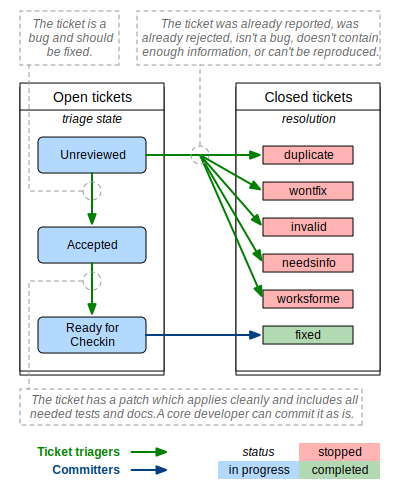

Django utilise Trac pour la gestion du travail autour de son code. Trac est un jardin soigné par la communauté formés de bogues que les gens ont trouvé et de fonctionnalités que certains souhaitent voir apparaître. Comme dans tout jardin, il y a parfois des mauvaises graines à enlever et quelquefois des fleurs et des légumes doivent être cueillis. Nous avons besoin de vous pour faire le tri afin qu’au final, tout le monde en bénéficie.
Comme pour tout jardin, nous pouvons aspirer à la perfection, mais dans la réalité, elle n’existe jamais. Même dans les jardins les plus purs, il y a toujours des escargots et des insectes. Dans un jardin communautaire, il y a aussi des personnes voulant aider de manière bien intentionnée et qui fertilisent les graines et empoisonnent les roses. C’est la tâche de la communauté entière de s’autogérer, de limiter au mieux les problèmes et d’éduquer ceux qui arrivent dans la communauté afin qu’ils puissent devenir des membres contributifs de valeur.
De même, bien que nous visions que Trac soit une représentation parfaite de l’état de progression de Django, nous reconnaissons que cela n’arrivera pas. En distribuant la charge de maintenance de Trac à la communauté, nous acceptons qu’il y aura des erreurs. Trac est « majoritairement à jour » et nous assumons que dans certains cas il se trompe. Cela nous va. Nous sommes des perfectionnistes avec des délais !
Nous comptons sur la communauté pour qu’elle continue de participer, de garder les tickets dans un état le plus juste possible et qu’elle amène les sujets de discussion dans nos listes de diffusion lorsqu’il y a de la confusion ou des désaccords.
Django est un projet communautaire et chaque contribution est utile. Nous ne pouvons pas le faire sans vous !
Malheureusement, un certain nombre de signalement de bogues ou de demandes de fonctionnalités dans le système des tickets ne contiennent pas tous les détails requis. Certains tickets ont des correctifs, mais ceux-ci ne satisfont pas toujours à toutes les exigences d’un bon correctif.
Une manière d’aider est de « trier » des tickets que d’autres utilisateurs ont créés.
Most of the workflow is based around the concept of a ticket’s triage stages. Each stage describes where in its lifetime a given ticket is at any time. Along with a handful of flags, this attribute easily tells us what and who each ticket is waiting on.
Comme une image vaut mieux que mille mots, commençons par ceci :
Il existe deux rôles dans ce diagramme :
En guise d’exemple, voici le cycle de vie d’un ticket moyen :
Certains tickets n’ont pas besoin d’autant d’interventions, mais il y a aussi des tickets qui en nécessitent beaucoup plus.
Nous décrivons ci-dessous plus en détails les diverses étapes par lesquelles un ticket passe durant son parcours de vie.
Le ticket n’a pas été relu par quelqu’un qui se sentait qualifié pour juger si ce ticket contient un problème réel, une fonctionnalité raisonnable ou s’il devrait plutôt être fermé pour une ou différentes raisons.
La grande zone grise ! La signification absolue de « accepté » est que le problème décrit dans le ticket est valide et se trouve dans un état où on peut travailler sur sa résolution. Au-delà de cela, d’autres aspects sont à prendre en considération :
Accepted + No Flags
The ticket is valid, but no one has submitted a patch for it yet. Often this means you could safely start writing a patch for it. This is generally more true for the case of accepted bugs than accepted features. A ticket for a bug that has been accepted means that the issue has been verified by at least one triager as a legitimate bug - and should probably be fixed if possible. An accepted new feature may only mean that one triager thought the feature would be good to have, but this alone does not represent a consensus view or imply with any certainty that a patch will be accepted for that feature. Seek more feedback before writing an extensive patch if you are in doubt.
Accepted + Has Patch
The ticket is waiting for people to review the supplied patch. This means downloading the patch and trying it out, verifying that it contains tests and docs, running the test suite with the included patch, and leaving feedback on the ticket.
Accepted + Has Patch + Needs …
This means the ticket has been reviewed, and has been found to need further work. « Needs tests » and « Needs documentation » are self-explanatory. « Patch needs improvement » will generally be accompanied by a comment on the ticket explaining what is needed to improve the code.
The ticket was reviewed by any member of the community other than the person who supplied the patch and found to meet all the requirements for a commit-ready patch. A committer now needs to give the patch a final review prior to being committed. See the New contributors” FAQ for « My ticket has been in RFC forever! What should I do? »
Cette étape n’apparaît pas dans le diagramme. Elle est utilisée avec modération pour garder la trace d’idées plus générales ou de demandes de fonctionnalités à plus long terme.
These tickets are uncommon and overall less useful since they don’t describe concrete actionable issues. They are enhancement requests that we might consider adding someday to the framework if an excellent patch is submitted. They are not a high priority.
Un certain nombre de drapeaux, apparaissant sous forme de cases à cocher dans Trac, peuvent être définis pour un ticket :
Cela signifie que le ticket possède un correctif associé. Ceux-ci sont analysés pour estimer si le correctif est « bon ».
Les trois champs suivants (Needs documentation, Needs tests, Patch needs improvement) ne s’appliquent que lorsqu’un correctif est disponible.
Ce drapeau est utilisé pour les tickets ayant un correctif, mais pas encore de documentation. La documentation complète des fonctionnalités est un prérequis avant de pouvoir faire entrer du code dans Django.
Ce drapeau indique que le correctif a besoin de tests unitaires associés. Encore une fois, il s’agit d’un élément obligatoire pour un correctif valable.
Ce drapeau signifie que même si le ticket possède un correctif, il n’est pas encore prêt à être commité. Cela peut signifier que le correctif n’est plus applicable, que son implémentation est défaillante ou que le code ne correspond pas aux standards exigés.
Désigne les tickets qui nécessitent de petits correctifs assez simples.
Les billets doivent être classés par type parmi :
Les tickets doivent être classés en composants indiquant quelle partie du code de Django ils concernent. Cela aide à organiser les tickets et à les rendre plus facilement retrouvables.
L’attribut severity est utilisé pour identifier les tickets bloquants, c’est-à-dire des problèmes devant être absolument résolus avant de publier la prochaine version de Django. Typiquement, il s’agit de bogues provoquant des régressions en comparaison d’anciennes versions ou qui sont potentiellement la cause de pertes de données importantes. Cet attribut est assez rarement utilisé et la grande majorité des tickets possèdent un niveau de sévérité « normal ».
Il est possible d’utiliser l’attribut version pour indiquer la version dans laquelle le bogue signalé a été identifié.
Ce drapeau est utilisé pour les tickets qui sont liés aux questions d’interface utilisateur et d’expérience d’utilisation. Par exemple, ce drapeau serait approprié pour des fonctionnalités de présentation à l’utilisateur dans les formulaires ou l’interface d’administration.
Il est possible d’ajouter son nom d’utilisateur ou son adresse électronique dans ce champ pour être averti lorsque de nouvelles contributions sont apportées au ticket concerné.
Avec ce champ, il est possible d’étiqueter un ticket par plusieurs mots-clés. Cela peut par exemple être utile pour grouper plusieurs tickets autour d’un même thème. Les mots-clés peuvent être séparés par des virgules ou des espaces. Les recherches par mot-clé cherchent un mot-clé dans toute l’expression. Par exemple, si on clique sur le mot-clé « form » d’un ticket, les résultats contiendront tous les tickets étiquetés avec des mots tels que « formset », « modelformset » ou « ManagementForm ».
Lorsqu’un ticket a terminé son cycle de vie utile, il est temps de le fermer. Cependant, la fermeture d’un ticket est une grande responsabilité. Il faut être certain que le problème est réellement réglé, et il faut garder à l’esprit que celui qui a ouvert le ticket pourrait ne pas être heureux de voir son ticket fermé (sauf si une correction a été appliquée !). Si vous n’êtes pas sûr qu’un ticket doit être fermé, laissez un commentaire avec votre raisonnement.
Si vous fermez réellement un ticket, vous devez toujours vous assurer des éléments suivants :
Un ticket peut être résolu de plusieurs façons :
Si vous pensez que le ticket a été fermé par erreur, soit que le problème demeure, soit qu’il est réapparu ailleurs ou encore que les trieurs se sont trompés, vous pouvez réouvrir le ticket en fournissant des informations complémentaires. Encore une fois, évitez de réouvrir des tickets qui ont été fermés comme « wontfix », mais dans ce cas, préférez la discussion du problème sur la liste django-developers.
Le processus de tri est principalement mené par des membres de la communauté. Vraiment, TOUT LE MONDE peut aider.
Pour vous impliquer, commencez par créer un compte sur Trac. Si vous disposez d’un compte mais que vous avez oublié le mot de passe, vous pouvez le réinitialiser en utilisant la page de réinitialisation de mot de passe.
Puis, vous pouvez aider en :
Note
La page des rapports contient des liens vers de nombreuses requêtes Trac utiles, y compris certaines orientées sur le triage des tickets et la relecture de correctifs comme suggéré ci-dessus.
Vous pouvez aussi trouver plus de Conseils pour les nouveaux contributeurs.
Cependant, nous demandons à tous les membres de la communauté de respecter les principes suivants en travaillant sur la base de données des tickets :
Une régression est un bogue présent dans une version plus récente de Django et qui ne l’était pas avant. Un élément d’information extrêmement utile est le commit qui a introduit la régression. Le fait de connaître le commit qui est la cause du changement de comportement aide à découvrir si la modification était intentionnelle ou s’il s’agit d’un effet de bord inattendu. Voici comment vous pouvez trouver ce commit.
Commencez par écrire un test de régression du problème pour la suite de tests de Django. Par exemple, nous supposons que nous recherchons une régression dans les migrations. Après avoir écrit le test et confirmé que celui-ci échoue avec le code le plus récent, placez-le dans un fichier séparé que vous pouvez exécuter de manière indépendante. Pour notr exemple, nous supposons que nous avons placé le test dans le fichier tests/migrations/test_regression.py, qui peut être exécuté avec
$ ./runtests.py migrations.test_regression
Puis, nous marquons le point actuel dans l’historique comme « mauvais » (bad) dans la mesure où le test échoue
$ git bisect bad
You need to start by "git bisect start"
Do you want me to do it for you [Y/n]? y
Nous devons maintenant trouver un point dans l’historique git avant l’introduction de la régression (c’est-à-dire un point où le test passe). Utilisez quelque chose comme git checkout HEAD~100 pour extraire une version du code précédente (100 commits dans le passé, dans ce cas). Vérifiez si le test passe ou échoue. S’il échoue, marquez ce point comme « mauvais » (git bisect bad), puis continuez d’extraire du code plus ancien et refaites le contrôle jusqu’à ce que vous trouviez un point d’historique où le test passe, et marquez alors ce point comme « bon » (good)
$ git bisect good
Bisecting: X revisions left to test after this (roughly Y steps)
...
Nous sommes maintenant prêt pour la partie sympa : utilisez git bisect run pour automatiser la suite du processus
$ git bisect run tests/runtests.py migrations.test_regression
Vous devriez voir git bisect utiliser une recherche binaire pour extraire automatiquement les révisions entre les bons et mauvais commits jusqu’à ce qu’il trouve le premier commit « mauvais » où le test échoue.
À ce stade, reportez vos résultats sur le ticket Trac et ajoutez le test de régression en pièce jointe. Lorsque quelqu’un écrira une correctif pour ce problème, il disposera déjà de votre test comme point de départ.
oct. 29, 2020
{kind=link}